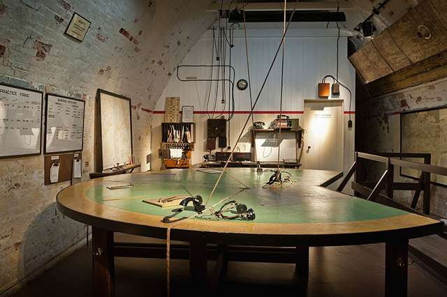

THE MISSION
OPERATION DYNAMO
THE MISSION
THE MAN
THE IMPACT
Why were the allies at Dunkirk?
At the start of world war II there was a lot of tension in
France. Germany had just invaded Poland, and France had to
play the waiting game and be ready for Germany to strike.
Then, on May 10th, 1940, two German armies advanced into
France, one as a northern distraction, and another as a
way to break through the French lines. This resulted in
a rapidly decreasing pocket in which the allies had to
survive. Day by day the German army took over more and
more cities, leaving Dunkirk as the only viable option
for a chance at survival.
The plan
It was in Dover Castle where operation dynamo was devised,
coordinated by the royal navy and Vice Admiral Bertram Ramsay.
Immediately, Ramsay and his small team realized that
evacuation by sea was the only viable option, and started
planning. The plan was to have all sorts of water craft,
big or small, go to the beaches of Dunkirk. It was here
where the soldiers would board the boats and be delivered
to safety. However, upon arrival on May 26th, it was
discovered that the port facilities had been destroyed by
German air raids. It was then decided that soldiers would
traverse the breakwaters at the harbor to board the boats.
All in all, over 300,000 troops were saved, and despite
the major equipment loss, operation dynamo was deemed a success.